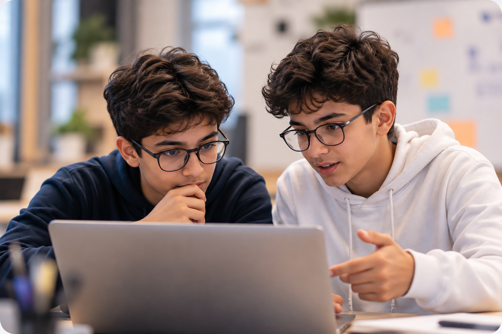
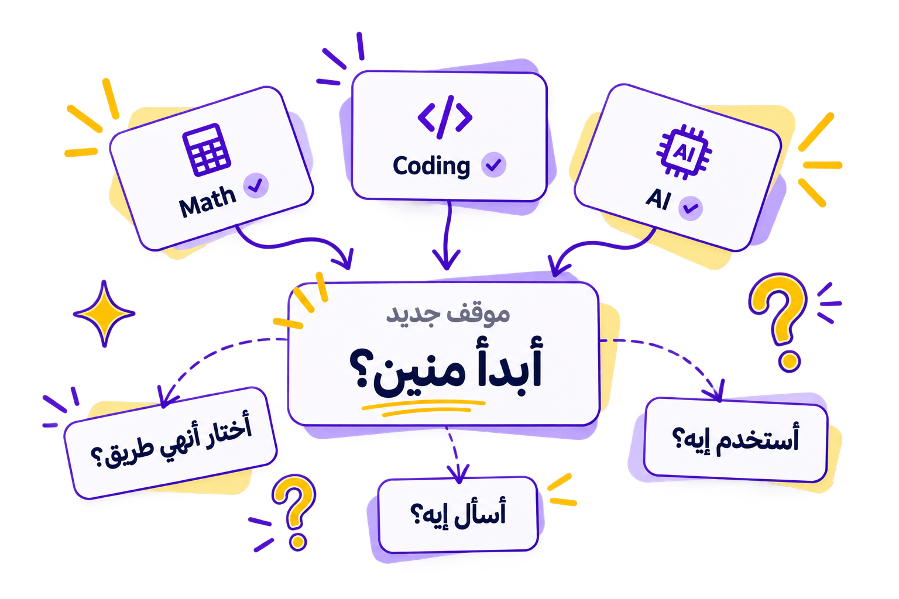

مشكلة جديدة.
وأكتر من حل ممكن.
نراعي القيود:
وقت محدد
موارد محدودة
شروط واحتياجات الحل
 اشترك الآن
اشترك الآن
Zola Think هي تجربة تعليمية بتقدم مهمات مستوحاة من الحياة الحقيقية. كل مهمة فيها مشكلة جديدة بنحلّها مع فريق، ونستخدم فيها اللي اتعلمناه علشان نفكر، ناخد قرارات، ونبني حلول من أفكارنا.

مناسب للصفوف
5 ابتدائي - 3 إعدادي
أونلاين
من أي مكان
تجربة مدتها
90 دقيقة
فرق صغيرة
2–4 طلاب
بنتعلم في المدرسة والكورسات معلومات ومهارات كتير، لكن مش دايمًا عندنا فرصة نطبقها. في موقف مش مألوف، بنحتاج نفهم المشكلة، ونسأل الصح، ونربط المعلومات، ونفكر في أكتر من حل قبل ما نقرر.
عشان كده في Zola Think، مش بنكتفي بالمعلومة... بنتدرب على استخدامها.

إنت وفريقك بتكتشفوا دوركم وبتواجهوا مشكلة من الحياة الحقيقية. عندكم معلومات وقيود تراعوها، لكن مفيش خطوات جاهزة للحل.
نراعي القيود:
وقت محدد
موارد محدودة
شروط واحتياجات الحل
اعرف دورك والمشكلة المطلوب حلها.
افهم واسأل، واجمع المعلومات اللي تحتاجها.
اقترح واسمع فريقك، وقارنوا الحلول.
اختاروا الأنسب، وراعوا القيود.
نفّذوا بالبحث أو الحسابات أو التصميم أو التكنولوجيا.
قدّموا الحل واشرحوا الفكرة وأسباب اختياركم.
تفكّر بنفسك، وتجرّب أفكار جديدة، وتشتغل مع فريق، وتعرض حلّك.
التفكير النقدي · حل المشكلات
البحث · اتخاذ القرار
الإبداع · العصف الذهني
التفكير التصميمي · بناء النماذج
العمل الجماعي · التواصل
الاستماع · التعاون
مهارات العرض · المبادرة
المسؤولية · التواصل بثقة
ممكن نستخدم الحسابات أو البرمجة أو الذكاء الاصطناعي أو البحث، لكن الأهم إننا نختار الأداة المناسبة للمشكلة.
كل Mission بتعرّفك على دور من مهنة حقيقية، وتديك فرصة تجرّب مجالات جديدة وتكتشف اهتماماتك.
كل أسبوع، إنت وفريقك في Mission مختلفة ودور جديد من مهنة حقيقية. تفكروا، تناقشوا، تقرروا، وتبنوا حلولكم بنفسكم.
والمهن؟ هتكتشفوها مع بداية كل Mission!
مهمتك مفاجأة!
الأسبوع 1 · دور جديد وتحدي مختلف
مهمتك مفاجأة!
الأسبوع 2 · دور جديد وتحدي مختلف
مهمتك مفاجأة!
الأسبوع 3 · دور جديد وتحدي مختلف
مهمتك مفاجأة!
الأسبوع 4 · دور جديد وتحدي مختلف
المقاعد محدودة إلى 9 طلاب في الـBatch.
احجز مكانك في Journey 01ادخل أول Mission مجانًا، واشتغل مع فريقك على تحدي جديد. جرّب إزاي تفكروا وتناقشوا أفكاركم وتوصلوا لحل سوا.
إجابات سريعة قبل ما تبدأوا التجربة.
تجربة زولا التعريفية المجانية: 90 دقيقة أونلاين، مع فريق صغير. ابنك يجرب يفكر، يقرر، ويبني حل بنفسه.
لا، مفيش خبرة تقنية أو برمجة مطلوبة. الفريق بيختار الأدوات المناسبة للحل.
للصف الخامس والسادس الابتدائي، والأول والثاني والثالث الإعدادي.
4 Missions في 4 مهن مختلفة، على مدار 4 أسابيع. Mission واحدة أسبوعيًا، حوالي ساعتين لكل مرة — 8 ساعات مباشرة. فرق من 2–4 طلاب، والـBatch بحد أقصى 9 طلاب. السعر 1,500 جنيه للطالب.
لا، المهن سر لحد ما كل Mission تبدأ، سواء في Mission 0 أو Journey 01.
في حالة غياب الطالب، لا يتم استرداد قيمة الـMission. ولو فيه مكان متاح في Batch تانية مناسبة، ممكن نحاول نوفر له فرصة تعويض، لكن التعويض بيكون حسب الأماكن المتاحة ومش مضمون.
يمكن طلب استرداد قيمة الاشتراك قبل بداية Journey 01 بيومين على الأقل. بعد بداية الـJourney، الاشتراك غير قابل للاسترداد. ولو Zola Think ألغت الـBatch بالكامل، يتم استرداد المبلغ كاملًا. وفي حالة إلغاء Mission من جانب Zola Think، يتم تحديد موعد بديل مناسب.
بعد حجز Journey 01، بنتواصل مع ولي الأمر على واتساب لإرسال تفاصيل الدفع. الدفع متاح عن طريق InstaPay أو Vodafone Cash، والمكان بيتأكد بعد إتمام الدفع.
أيوه، Journey 01 تشمل My Zola Mission Portfolio وشهادة رقمية. صندوق زولا الفعلي مش مشمول في الاشتراك.